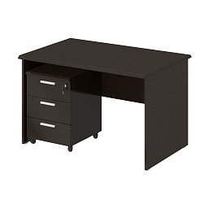

Черный письменный стол для удобной работы в офисе
Габариты ШхГхВ: 100х60х80 мм
+3 к моральному духу сотрудника офиса
+50 к прибыли от данного сотрудника
Стол изготовлен исключительно с использованием труда лепреконов, которые работают за разрешение петь во время работы свои песни. Это позволяет наполнить стол корпоративным духом вашего сотрудника и приподнимает его моральное состяние, ведь он не слышит плача лепреконов, а только шелест их сладких песен про свободную жизнь.
При покупке трех столов - четвертый в подарок!
При покупке десяти столов - в подарок 10 сотрудников офиса!
Все права защищены